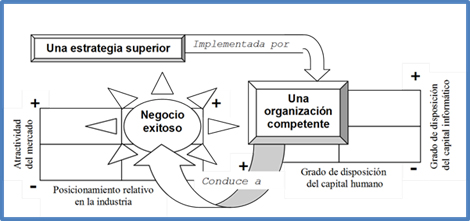
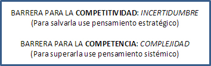
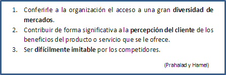
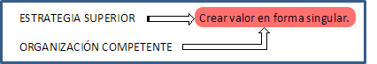
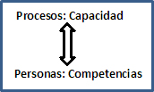
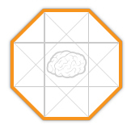
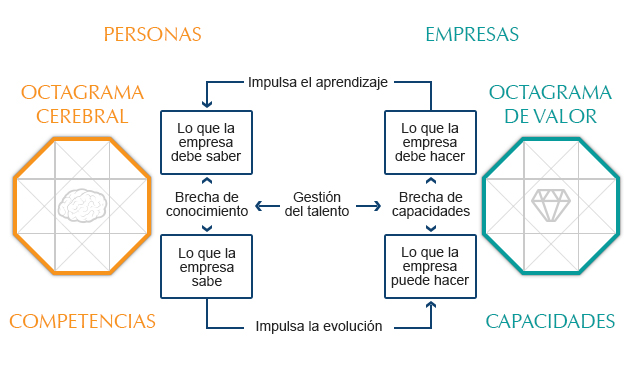

Artículos de interés
Competitividad y competencia
Una empresa exitosa es competitiva y competente al mismo tiempo
¿Qué se requiere para que un negocio sea exitoso?
Para ser exitosos en los negocios, una empresa o un individuo tienen que ser competitivos y competentes. Ser bueno en uno o más factores críticos para el éxito (en inglés, critical success factors), le confiere ventajas competitivas a la empresa y el conjunto de “bondades” constituye lo que se denomina competencia organizacional (en inglés, organizacional competencies).
Para que una empresa de cualquier giro y tamaño sea competitiva, primero tiene que ser competente. En el lado izquierdo de la imagen se observa que los negocios exitosos son aquellos bien posicionados en mercados atractivos. Sin embargo, para llevar los negocios al cuadrante del éxito, se requiere de una estrategia superior que sea implementada por una organización competente. Las organizaciones competentes son aquéllas que dotan a su personal más talentoso de las mejores herramientas para tomar decisiones, como se observa en el lado derecho de la figura.

¿Cómo se puede ser competitivo y competente?
En SAGE-WISE nos enfocamos a desarrollar los hábitos del pensamiento que se necesitan para abordar los problemas según en el contexto en el que se presentan. Una empresa es competitiva en su ámbito económico externo, el cual normalmente presenta incertidumbre. La barrera de la incertidumbre se aborda con el hábito del pensamiento estratégico.
Por otro lado, una empresa es competente en su ámbito social interno, el cual usualmente es complejo. La barrera de la complejidad se trata con el hábito del pensamiento sistémico. Los hábitos son disciplinas adquiridas con la práctica que nos permiten abordar cierto tipo de problemas con menor esfuerzo pero más efectividad. El hábito del pensamiento estratégico eventualmente nos llevará a predecir mejor las acciones de los competidores frente a las acciones de uno y el pensamiento sistémico nos permitirá visualizar mejor las consecuencias no intencionadas de las decisiones tomadas internamente en la organización.

La administración no solo es un arte, sino también una ciencia.
En SAGE-WISE incorporamos los principios de la administración científica en nuestros métodos de enseñanza.
Uno de estos principios es el de la competencia organizacional medular (Core competence), originalmente propuesto por C.K. Prahalad y Gary Hamel en 1990. Según estos investigadores de la administración científica, una competencia organizacional es una combinación armonizada de múltiples recursos y capacidades que distinguen a una organización del resto en cierta industria, y para que sea medular, la competencia debe:

Los estudiosos de la administración de negocios sostienen que una organización puede desarrollar una ventaja competitiva sólo si sus actividades crean valor en una forma singular, para que los competidores no puedan emularla fácilmente. Los empleados pueden facilitar esta singular forma de crear valor si desarrollan competencias para la organización en la que trabajan, produciendo relaciones sociales complejas, procesos innovadores y conocimiento tácito y exclusivo.

Las competencias organizacionales son el resultado de la compleja interacción de la capacidad de los procesos de la empresa para agregar valor y las competencias de los equipos de trabajo y las personas que la conforman.

¿Cómo simplificamos la realidad?
En las empresas no hay áreas específicas que por sí solas sean absolutamente responsables de algún resultado particular. El comportamiento de los sistemas organizacionales depende de una interacción muy compleja entre sus elementos, por lo que para entenderlas, hay que recurrir a los modelos. En SAGE-WISE contamos con dos modelos que simplifican la realidad: Uno para la competitividad, denominado Octagrama de Valor® y otro para las competencias, denominado Octagrama Cerebral®.
El Octagrama de Valor® es la representación orgánica de una empresa en la que se despliegan los procesos y actividades que generan, multiplican y entregan valor a los clientes, accionistas, empleados y otros grupos de interés. Es un modelo de competitividad.
El Octagrama Cerebral® es el despliegue del capital intelectual de una empresa en forma de las competencias que se requieren para realizar eficazmente las actividades y procesos que agregan valor a los recursos de la organización. Es un modelo de competencias.

El Octagrama Cerebral® despliega las competencias organizacionales, esto es, lo que una empresa sabe o debería saber para generar más valor. El propósito último de este modelo es que las personas tengan las competencias necesarias para desempeñar adecuadamente su función, ya sea de vendedor, comprador, planificador, analista o mercadotécnico.
El Octagrama de Valor® muestra los procesos y actividades que generan valor es decir, lo que una empresa hace o debería hacer para cumplir con su misión. El propósito último de este modelo es que los procesos tengan la capacidad de entregar el valor prometido al cliente.
¿Cómo se relacionan la competitividad y la competencia?
Los octagramas interactúan en un círculo virtuoso de evolución y aprendizaje que se perfecciona a medida que se cierran las brechas entre lo que se es y lo que se puede llegar a ser con una adecuada gestión del talento organizacional. El Octagrama de Valor® cierra la brecha de capacidades e impulsa el aprendizaje organizacional y el Octagrama Cerebral® cierra la brecha de competencias e impulsa la evolución de la empresa hacia el éxito.

Los octagramas se relacionan entre sí por medio de sus ocho vértices, donde se ubican las funciones que desempeñan sus ejecutivos como dueños de los procesos que generan la riqueza (Octagrama de Valor®) y como individuos competentes que realizan las funciones (Octagrama Cerebral®).